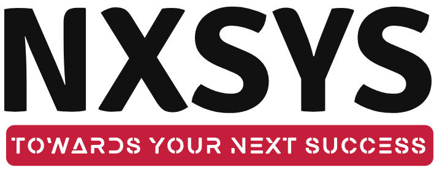

UAE's Premier Vertically Integrated Dairy & Juice Manufacturer
AI, IoT, and Big Data powering next-generation dairy operations.
Your workforce systems must match this ambition.
Farmhands, milking technicians, and drivers operate without computer access. They need mobile-first and kiosk solutions.
300 trucks deploying at 4:00 AM daily. Driver certifications and availability must sync with logistics in real-time.
WPS compliance, EOS gratuity, visa renewals. 100% compliance required to avoid penalties.
The Single Source of Truth for all workforce data.
Global best practices harmonized with UAE statutory requirements.
Track the Establishment Card number linking each employee to their legal sponsor entity.
Flexible hierarchy management supporting Al Rawabi's complex structure.
The world-class SAP Payroll engine hosted in the cloud.
Decades of development with web-native accessibility.
The heart of operations for Al Rawabi's 24/7 workforce.
Mobile-first, offline-capable, GPS-verified attendance.
Mobile app + GPS at depot & delivery points
Biometric terminals at plant entry
Kiosk stations + supervisor approval
Web/mobile self-service
Align, Track, Reward - driving performance culture at Al Rawabi.
From CEO strategy to frontline execution.
Pre-configured compliance for UAE labor law and statutory requirements.
Global best practices harmonized with local regulations.
General Pension & Social Security Authority integration.
Mandatory scheme introduced 2023 for private sector.
| Criteria | SAP SF | Oracle | Workday | Darwinbox |
|---|---|---|---|---|
| UAE Native Payroll | ||||
| WPS Compliance | ||||
| S/4HANA Integration | ||||
| Infoporter Migration | ||||
| AI Copilot (Joule) |
EC + ECP + Time Tracking + PMGM
Go-Live Target: 4 months from kickoff
Blueprint, data cleansing, FTSD sign-off
EC, ECP, Time, PMGM setup & UAE localization
Data migration, UAT, parallel payroll
Training, cutover, Go-Live & hypercare
SAP's official migration tool for ECC HCM to SuccessFactors.
Phased approach to ensure data quality and validation.
Dedicated resources with full SuccessFactors expertise.
Automated system analysis
Migration automation
Best practice search
Project automation
Partner with UAE's First AI-Powered SAP Integrator